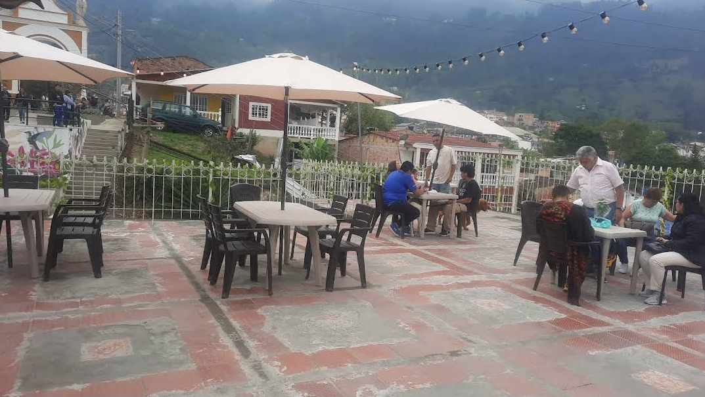

Ubicación pintoresca con vistas impresionantes
Ver en Google MapsUbicado en las pintorescas montañas de Choachí, el Café y Restaurante Monteluna ofrece una experiencia culinaria única con impresionantes vistas panorámicas. Rodeado de frondosa vegetación y majestuosos paisajes, este encantador establecimiento es el escape perfecto de la ajetreada vida urbana.
Auténtica cocina colombiana con un toque personal
En Monteluna, el talentoso chef Roberto se enorgullece de preparar platos tradicionales colombianos utilizando ingredientes frescos y de origen local. Su pasión por la cocina y su dedicación a preservar la autenticidad de cada plato hacen que la experiencia culinaria sea memorable y deliciosa.
*Ilustración de Roberto en la cocina
Un ambiente cálido y acogedor
El ambiente acogedor y rústico del Café y Restaurante Monteluna crea un entorno acogedor para que los huéspedes se relajen y disfruten de sus comidas. El atento personal y el excelente servicio mejoran aún más la experiencia general, asegurando que cada visitante se sienta como en casa.
Poema: Monteluna en Choachí
En las montañas de Choachí se alza,
Monteluna, un rincón celestial.
Donde el aroma del café se enlaza,
Con paisajes de belleza sin igual.
Roberto, artista de la cocina,
Forja sabores de la tradición,
Sus manos mágicas nos fascinan,
Y a cada plato imprime su pasión.
Del Ajiaco al dulce Arequipe,
Sus creaciones son un festín,
Cada bocado nos hace el deleite,
De la esencia colombiana en un jardín.
El sol se oculta tras las montañas,
Y bajo el manto de la luna brillante,
La luz de Monteluna acompaña,
A los comensales en su ambiente vibrante.
En este encantador rincón soñado,
Donde la naturaleza nos abraza,
Se encuentran los sabores del pasado,
Y la calidez de un hogar que nos enlaza.
Ven, acércate a este paraíso terrenal,
Donde los sabores y paisajes se fusionan,
En el Café y Restaurante Monteluna, sin igual,
Donde el amor por Colombia nunca se esfuma.
Contacto
Para reservaciones o más información, por favor contáctenos al teléfono +57 313 4393911
Síguenos en Instagram